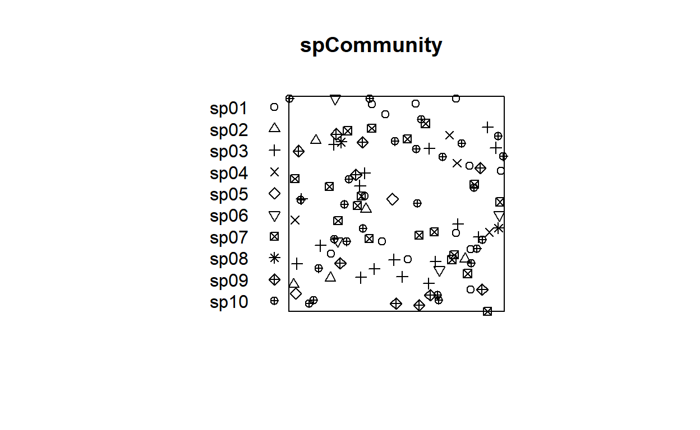
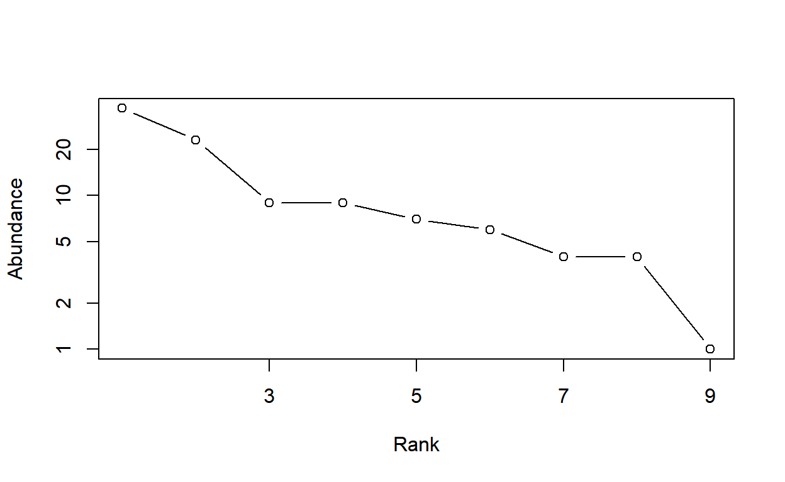
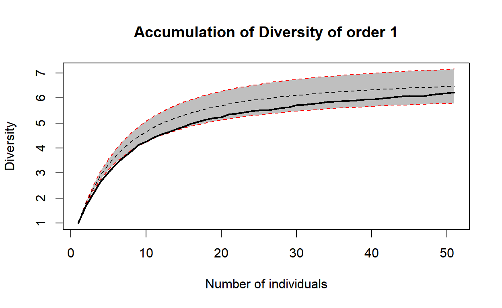
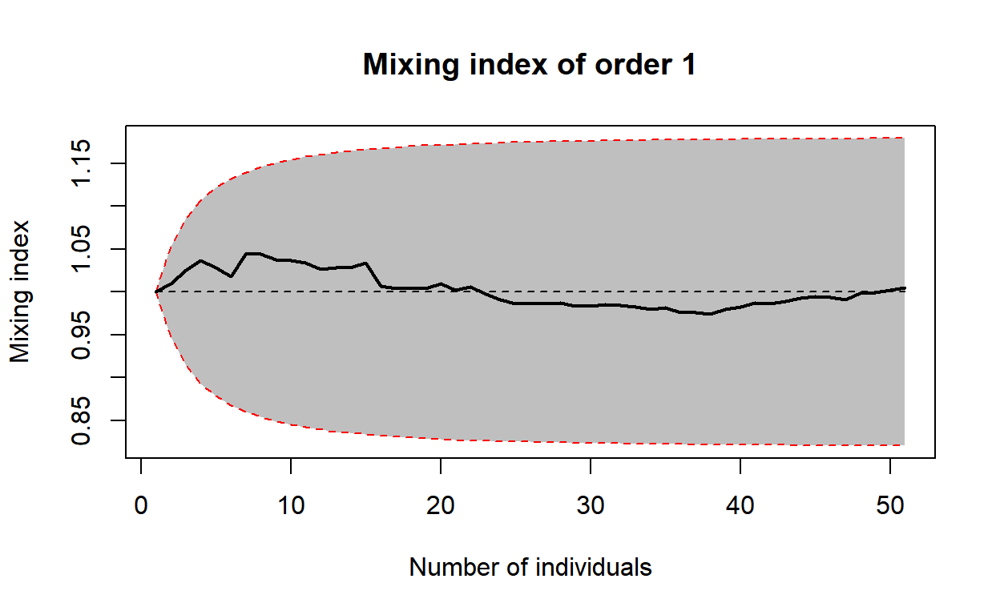
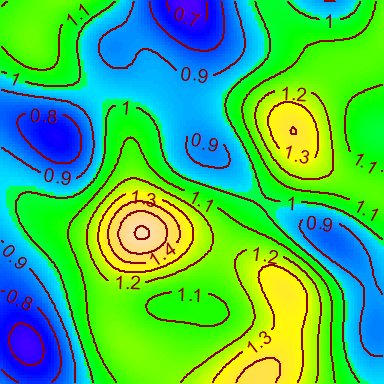

This is a preliminary version of a package designed to measure spatially-explicit diversity.
Install the SpatDiv package for R from Github.
library("devtools")
devtools::install_gitub("EricMarcon/SpatDiv")Create a random, spatialized community with 100 individuals of 10 species.
library("SpatDiv")
rSpCommunity(n=1, size=100, S=10) -> spCommunity
plot(spCommunity, which.marks = "PointType")
Plot a rank-abundance curve.
plot(as.AbdVector(spCommunity))
Compute the Diversity Accumulation Curve for 1 to 50 neighbors for orders 0, 1 and 2, with the theoretical, null-model curve. Plot it for Shannon diversity.
divAccum <- DivAccum(spCommunity, n.seq = 1:50, q.seq=0:2, H0="Multinomial")======================================================================================================================================================plot(divAccum, q = 1)
Compute and plot the mixing index of any order. Save the local values for future use.
mixing <- Mixing(spCommunity, n.seq = 1:50, q.seq=0:2, H0="Multinomial", Individual = TRUE)======================================================================================================================================================plot(mixing, q = 1)
The same accumulation cuves can be computed by increasing the sample area around each point. The argument contains the vector of radii of those circular plots.
The actual accumulation curves of diversity and mixing index can be compared to null models with their confidence intervals. Values of the argument can be:
“None”: No null model is run.
“Multinomial”: The accumulation follows a multinomial sampling, with respect to the number of individuals only. The theoretical value and confidence envelope are calculated by the iNEXT package.
“Binomial”: The individuals are relocated in the window uniformly and independently.
“RandomLocation”: The individuals are relocated accross their actual locations.
The multinomial null hypothesis is by far faster to compute than the others because it does not require point pattern simulations.
Map the local diversity accumulation or mixing index, for example the species accumulation in 10 points (9 neighbors and the central point).
MapPlot(mixing, Order = 0, NeighborHood = 10)[using ordinary kriging]